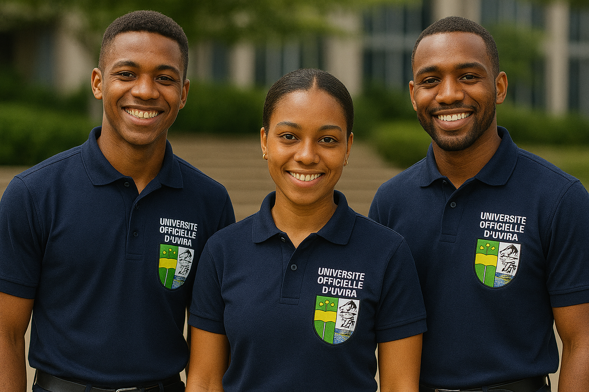
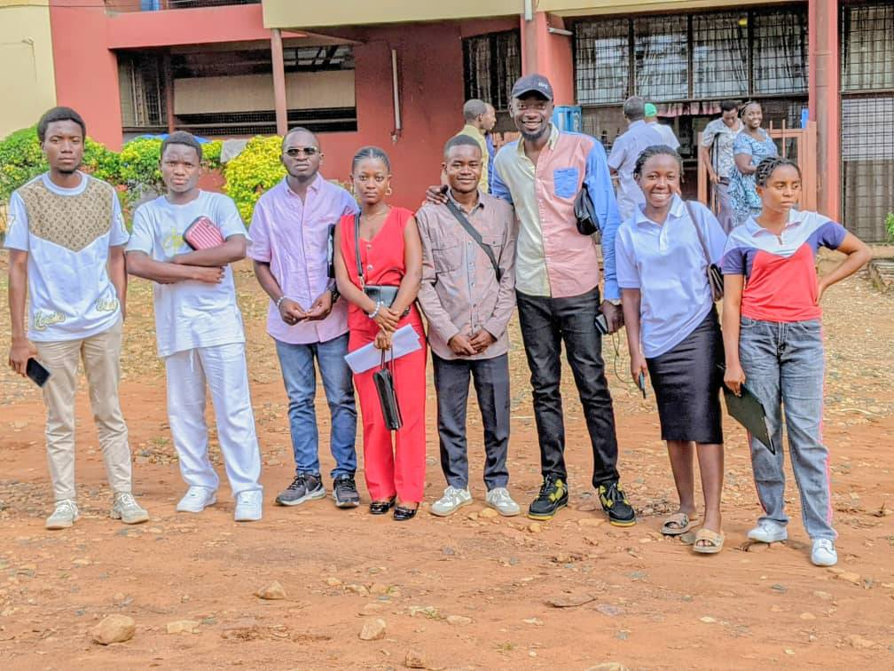
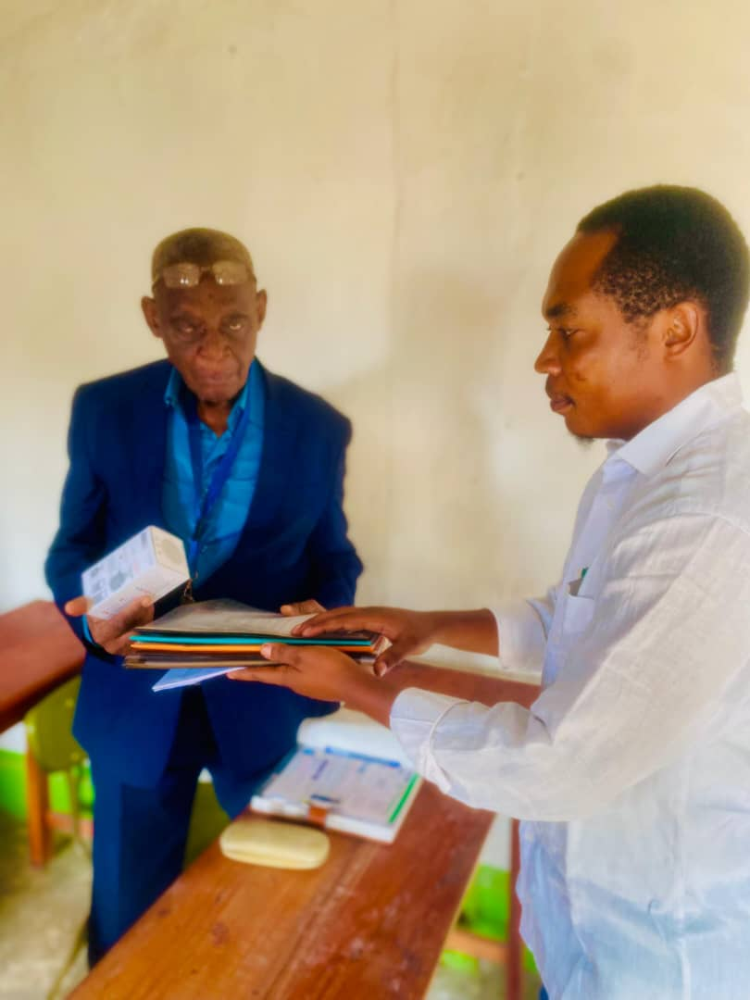
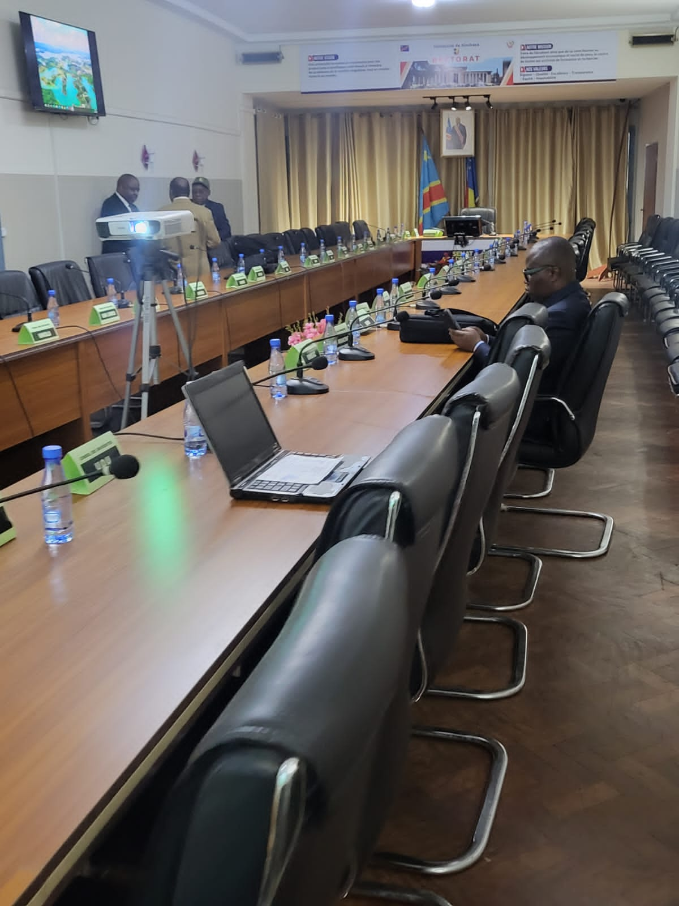

Réalisez vos rêves à l'université officiel d'Uvira
Grace aux notables j'étudie a l'uou
L’engagement des notables nous a ouvert les portes d’un avenir
meilleur. Aujourd’hui, je poursuis mes études à l’Université
Officielle d’Uvira, un établissement d’excellence qui façonne les
leaders de demain. Je suis fier de faire partie d’une institution
qui valorise le mérite, la solidarité et l’innovation.
Musaliza Muharuba
professeur
Mulimbwa N'sibula
professeur
Kasema
professeur
Cadeaux rushingira
professeur
Mzee Somora
professeur
Actualités

Les inscriptions pour l’année académique 2025–2026 sont
officiellement ouvertes L’Université Officielle d’Uvira informe
les nouveaux candidats et les étudiants réguliers que les
inscriptions pour l’année académique 2025–2026 ont commencé ce
lundi 1er août.
Aujourd'hui le Maire intérimaire de la ville D'uvira à terminer à
dispenser sont au étudiants de bac+1 et ces étudiants on demander
une photo d'ensemble et le Maire de la ville D'uvira été
accompagnée du commandant Ville pour ça sécurité.
Le nouveau bâtiment de l'UOU offre des installations modernes,
conçues pour répondre aux besoins spécifiques des étudiants et des
enseignants. Ces infrastructures facilitent un apprentissage de
qualité dans un cadre sécurisé et adapté.
L'université Officielle D'uvira et l'unique université publique de
la Ville D'Uvira et pour cette raison il vous souhaite le
bienvenue à tous pour prendre votre inscription.
Les étudiants de L'université officielle D'uvira Organisent
demain la cérémonie D'intégration Qui se tiendra dans le
restaurant swiss plaza.

Les étudiants de l'université officielle D'uvira. Faculté
d'économie à l'université du Burundi campus de mutanga pour
suivre les cours de micro économie et Macro Économie mais
aussi il vont passer un stage d'un mois Dans un entreprise
burundais.

La journée de remise et de reprise à l’Université Officielle
d’Uvira (UOU)

ESU : L'Université Officielle d'Uvira marque sa première
participation au Conseil d'administration des Universités
Publiques du Congo qui se tient à L'Université de Kinshasa du
16 au 18 décembre 2024.
Université officiel d’uvira
L’agriculture est au cœur du développement de nos communautés.
La filière Agronomie forme des professionnels capables de
répondre aux défis de la sécurité alimentaire.
L’agronomie est une discipline scientifique et technique qui
combine des savoirs en biologie, écologie, chimie, géologie,
et technologies agricoles afin de comprendre et d’optimiser
les systèmes de production agricole. Elle vise à améliorer
durablement les rendements agricoles tout en préservant les
ressources naturelles, en protégeant les sols, la biodiversité
et en limitant l’impact sur l’environnement. L’agronomie joue
un rôle clé dans la lutte contre l’insécurité alimentaire, les
changements climatiques et la dégradation des terres. À
l’Université Officielle d’Uvira, la filière Agronomie forme
des professionnels qualifiés, capables d’analyser des systèmes
agraires complexes, de proposer des solutions innovantes, et
de travailler en synergie avec les communautés rurales. Nos
étudiants sont préparés à devenir : Ingénieurs agronomes,
Chercheurs en biotechnologies agricoles, Conseillers en
agroécologie, Gestionnaires de projets agricoles, grâce à un
programme axé à la fois sur les fondements théoriques et la
pratique sur le terrain. Ils participent activement à des
projets de recherche appliquée, à des stages en exploitation
agricole, et à des missions de sensibilisation pour la
souveraineté alimentaire. En fin de cycle, ils sont prêts à
relever les défis du développement rural durable et à
contribuer à une agriculture résiliente, respectueuse de
l’humain et de l’environnement.
La santé est une priorité pour chaque nation. La filière
Médecine prépare des médecins compétents, prêts à servir les
populations avec engagement et rigueur scientifique.
La filière Médecine forme des professionnels capables de
prévenir, diagnostiquer et traiter les maladies, tout en
plaçant l’humain au centre des soins. Les enseignements
combinent des cours théoriques approfondis (anatomie,
physiologie, pathologie, pharmacologie) à une formation
clinique exigeante dans les hôpitaux et centres de santé
partenaires. Nos étudiants développent une éthique médicale
rigoureuse, une excellente capacité d’analyse, ainsi que des
compétences en communication et en prise de décision dans des
contextes complexes. À l’issue de la formation, les diplômés
peuvent exercer en tant que : Médecins généralistes ou
spécialistes, Chercheurs biomédicaux, Responsables de santé
publique, Médecins urgentistes ou hospitaliers, Experts en
épidémiologie ou médecine tropicale. Notre approche repose sur
une médecine de proximité, respectueuse des patients et
adaptée aux réalités locales.
Pour une société juste, il faut des professionnels du droit.
Cette filière forme les futurs avocats, magistrats et juristes
conscients des enjeux éthiques et sociaux.
Le droit est la pierre angulaire d'une société équitable et
organisée. À l’Université Officielle d’Uvira, la filière de
Droit prépare les étudiants à comprendre les fondements
juridiques, à défendre les libertés fondamentales et à assurer
l’application de la loi avec impartialité. Les cours couvrent
: Nos diplômés sont formés pour devenir : Avocats plaidants et
conseillers juridiques, Magistrats et juges, Fonctionnaires
d'État ou experts en droit international,
Enseignants-chercheurs en sciences juridiques. Le droit civil,
pénal, administratif, constitutionnel et international,
L’éthique juridique, la procédure judiciaire et la rédaction
juridique, Les institutions politiques et le fonctionnement de
l’État de droit. En alliant théorie, pratique et stages en
cabinet ou tribunaux, cette formation renforce la justice et
la démocratie.
Le secteur du bâtiment joue un rôle essentiel dans l’aménagement
et le développement de nos territoires. La filière Bâtiment
forme des professionnels compétents dans la construction.
Ils bénéficient d’un programme équilibré entre cours
théoriques, travaux pratiques, visites de chantiers,
simulations numériques, et stages professionnels sur le
terrain. Ils participent aussi à des projets d’aménagement
urbain, de construction éco-responsable et de développement
d’habitats adaptés au climat local. À la fin de leur
formation, nos diplômés sont prêts à relever les défis liés à
l’urbanisation croissante, aux catastrophes naturelles, à la
transition énergétique et à la construction durable, en
contribuant à bâtir un avenir solide et équilibré pour nos
communautés.
L’économie façonne notre monde. Cette filière prépare les futurs
décideurs économiques capables de gérer des entreprises,
analyser des marchés et proposer des politiques efficaces.
L’économie est une discipline fondamentale pour comprendre et
influencer les dynamiques de croissance, d’investissement, de
consommation et de développement. À l’Université Officielle
d’Uvira, la filière Économie forme les futurs : Analystes
économiques et financiers, Planificateurs de politiques
publiques, Gestionnaires d’entreprises et experts en
développement local et international. Nos étudiants sont
formés à :
L’analyse macroéconomique et microéconomique,
La gestion des ressources, des budgets et des projets,
La prise de décisions stratégiques basées sur les données et
indicateurs économiques.
Grâce à des stages en entreprise, des ateliers de modélisation
et des cas pratiques,
nos diplômés deviennent des acteurs clés de l’économie
nationale et régionale.
Comprendre l’être humain est une mission noble. La filière
Psychologie forme des spécialistes du comportement, de la santé
mentale et de l’accompagnement social.
La psychologie explore les mécanismes mentaux, émotionnels et
comportementaux de l’être humain. C’est une discipline
essentielle dans un monde où les enjeux de santé mentale sont
de plus en plus visibles. À l’Université Officielle d’Uvira,
la filière Psychologie forme des professionnels capables de :
Écouter, évaluer et accompagner des individus ou des groupes,
Comprendre les troubles mentaux et comportementaux, Travailler
dans des hôpitaux, écoles, ONG, entreprises ou cliniques
privées. Le programme allie théorie et pratique, avec des
modules en :
Psychologie clinique,
Psychologie sociale et du développement,
Psychométrie et analyse comportementale.
Nos étudiants participent à des simulations, des stages et des
recherches pour mieux comprendre les réalités de terrain et
accompagner efficacement les individus dans leur
épanouissement psychologique.
Questions fréquentes
Tout ce que vous devez savoir sur l'UOU
Vous pouvez vous inscrire en ligne via notre formulaire
d'inscription ou directement au bureau des admissions.
L’UOU propose des filières en Agronomie, Médecine, Droit,
Économie, Psychologie et Architecture.
Oui, l'université dispose de résidences étudiantes sécurisées et
proches du campus.
Équipe administrative
Découvrez les dirigeants et responsables clés de l'Université
Officielle d'Uvira